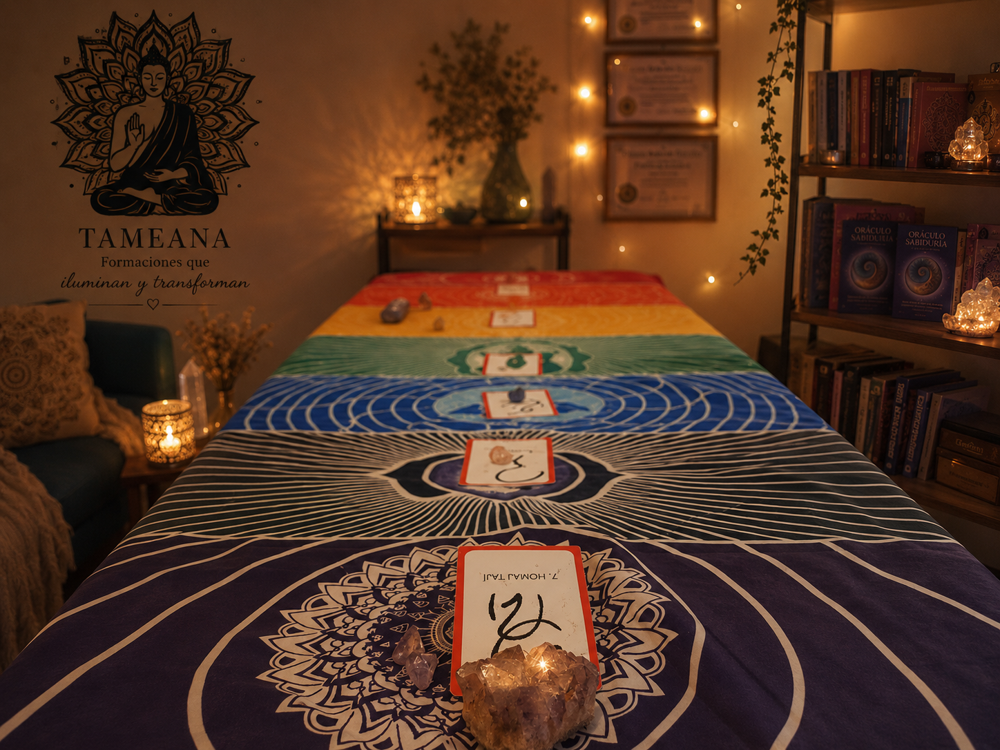

Terapias Energéticas · Buenos Aires
Un espacio sagrado de encuentro con tu campo energético y tu verdad interior.
Cada sesión es diseñada desde el amor y la presencia, con las herramientas más adecuadas para tu proceso único.


Sesiones de armonización energética orientadas a fortalecer el equilibrio, la coherencia y el potencial personal. La EMF Balancing Technique® trabaja sobre el Entramado de Calibración Universal, un campo de energía y luz que forma parte de nuestro sistema energético. A través de una serie progresiva de fases, la técnica favorece una mayor integración energética, ayudando a armonizar nuestra relación con la historia personal, el presente y los potenciales futuros.
Cada sesión contribuye a fortalecer el entramado energético, promoviendo una mayor capacidad para sostener nuestra energía, desarrollar claridad interior y vivir con mayor equilibrio y consciencia.
Las primeras cuatro fases están enfocadas en la evolución de la consciencia y la creación de una base energética sólida para la transformación personal. Las fases V a VIII profundizan este recorrido, acompañando la integración de esos aprendizajes en la vida cotidiana y el desarrollo de una mayor maestría personal.
Una experiencia profunda y transformadora para quienes desean reconectarse con su esencia, fortalecer su energía y co-crear una vida más alineada con su propósito.
Reservar sesión →
Sesiones de autoconocimiento basadas en la lectura e interpretación de tu Carta Natal en donde comprender el mapa simbólico con el que llegamos a esta vida: nuestros talentos, desafíos, aprendizajes, potenciales y ciclos evolutivos.
Más que predecir acontecimientos, reconocer recursos internos, comprender patrones personales y desarrollar una relación más consciente con uno mismo y con el propósito de vida.
Invitación a descubrir quién eres, de dónde vienes y cuáles son las posibilidades que buscan expresarse a través de ti.
Reservar sesión →

Sesiones vibracionales que combinan cristales de cuarzo, geometría sagrada y frecuencias específicas para favorecer procesos de armonización, expansión de consciencia y bienestar integral.
Tameana acompaña la liberación de bloqueos energéticos, el equilibrio emocional y la reconexión con aspectos esenciales del ser.
Nivel I – Salush Nahi (Triángulo Sagrado) Favorece la liberación de estructuras limitantes, promoviendo equilibrio, claridad y apertura energética.
Nivel II – Ma'hat (Puertas del Alma) Profundiza el trabajo del corazón como centro de consciencia, facilitando procesos de integración, transformación y alineación interior.
Reservar sesión →

Sesiones de conexión y alineación energética que combinan cristales de cuarzo, geometría sagrada y códigos vibratorios específicos para favorecer la expansión de consciencia y la reconexión con el potencial interior.
Sakh Majat propone un trabajo profundo de armonización a través de estructuras energéticas diseñadas para facilitar procesos de transformación, claridad y evolución personal.
Nivel I – La Pirámide de Sirio Favorece la conexión con frecuencias elevadas, el despertar del potencial de autosanación y una mayor alineación con el propio camino.
Nivel II – La Estrella de Sirio Profundiza el proceso promoviendo la integración de las energías femenina y masculina, favoreciendo la conexión con una versión más consciente, equilibrada y luminosa del ser.
Reservar sesión →Una colección de meditaciones, visualizaciones y recursos audiovisuales orientados al bienestar, la transformación personal y el desarrollo de la consciencia.
Prácticas inspiradas en distintas herramientas de crecimiento personal y armonización energética, incluyendo meditaciones para fortalecer la conexión interior, trabajar la gestión emocional, desarrollar una mayor presencia consciente y acompañar procesos de sanación y autoconocimiento.
Contenidos complementarios sobre energía, mindfulness, programación neurolingüística, vínculos familiares y ejercicios de integración para aplicar en la vida cotidiana. Espacio para detenerse, respirar y reconectar contigo mism@.

Accedé a meditaciones guiadas del método EMF Balancing Technique®, activaciones de origen estelar y prácticas gratuitas de Mindfulness y PNL.
 Ver canal de YouTube
Ver canal de YouTube

Experiencias de formación y transformación personal diseñadas para acompañarte en el aprendizaje, la integración y la aplicación práctica de herramientas de equilibrio energético, autoconocimiento y expansión de consciencia.
Cada programa combina material audiovisual, contenidos teóricos, gráficos explicativos, ejercicios de integración, meditaciones guiadas y recursos especialmente desarrollados para facilitar una experiencia profunda, clara y transformadora.
Más que una formación, se trata de un recorrido vivencial que te permitirá fortalecer tu conexión contigo mism@, comprender mejor tu energía y desarrollar recursos para crear una vida con mayor equilibrio, coherencia y bienestar.
Aprende a tu propio ritmo, desde cualquier lugar y con materiales diseñados para acompañar cada etapa del proceso.
Próximamente:
Escribime por WhatsApp y encontramos juntas la terapia que más resuena con tu momento actual. Te espero con amor.